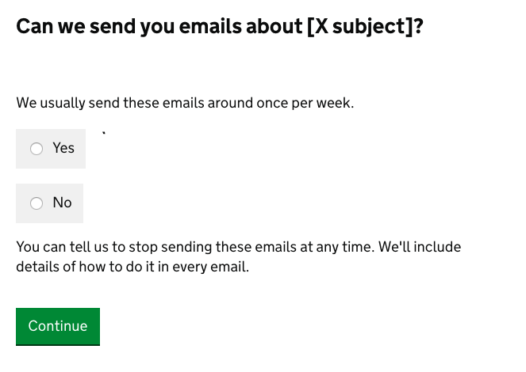

Beta This is new guidance. Complete our quick 5-question survey to help us improve it.
Design
Collecting personal information from users
Minimise the personal information you collect from users - and make sure you’re only collecting personal information when it’s a proportionate way of solving the problem you’re trying to solve.
Talk to your data protection expert or legal adviser to make sure what you’re planning to do is proportionate in the circumstances.
Make it as easy as possible for users to understand how you’ll use any personal information you do collect.
Don’t collect information you don’t need
The first thing to do is remove any questions that you don’t need to ask. As well as minimising the personal information you’re collecting, that will make your service simpler to use.
Make sure you don’t accidentally collect personal information by setting up your digital analytics tools correctly.
Don’t store information any longer than you need to
You don’t always need to store the personal information at all. For example, let’s say you need to know if someone is getting a particular benefit so you can tell whether they’re eligible to use your service.
You may be able to use an application programming interface (API) or something similar to an API so you can just record whether they were eligible or not. And avoid storing the raw personal information they supplied (for example, a scan of the benefit letter that proved their eligibility).
Don’t store personal information you do collect for longer than you need to given the purpose you collected it for.
Be clear about your legal basis for collecting information
The General Data Protection Regulation (GDPR) comes into force on 25 May 2018. Under GDPR, you need to be clear about your legal basis for collecting personal information.
Getting consent from the user in one basis.
But if the information you’re collecting is an essential part of providing a public service, think carefully about whether it could be better to rely on a different basis - for example, the ‘public task’ basis.
For example if you’re running a government service that involves issuing an official document in someone’s name, it’s probably not meaningful to ask for consent to collect their name. Because it’s not possible to provide the service without collecting that information.
Aside from consent, the legal bases for collecting and processesing personal information are:
- ‘public task’ - you need to collect or process the information to carry out a task in the public interest, or for an official function
- ‘contract’ - you need to collect or process the information to fulfill a contract you’ve entered into with the user - or because they have asked you to do something before entering into a contract (for example, provide a quote)
- ‘legal obligation’ - you need to collect or process the information to comply with the law (this doesn’t include contractual obligations)
- ‘legitimate interests’ - you need to collect or process the information to protect your interests, or those of a third party (and it’s reasonable to do so when balanced against the user’s interests)
- ‘vital interests’ - you need to collect or process the information to protect someone’s life
If you’re a public body you can’t rely on ‘legitimate interests’ for personal information you’re collecting or processing as part of a public task - only for things that are outside the scope of a public task.
Your data protection expert or legal adviser will be able to advise you what legal basis to rely on.
How to ask for consent
If you are relying on consent as the basis for collecting and processing personal information, it has to be meaningful consent. If a user refuses their consent, they must still be able to use the service.
Consent means the user has to explicitly agree to you using their information in a specific way, not just failing to say they disagree. Ask a direct question rather than relying on the user ticking or unticking a check box.
Make it clear what the user is agreeing to. It’s not consent if the user doesn’t understand what they’re consenting to.
And be equally clear about what the user should do if they want to withdraw their consent.
For example:

Consent must be specific. If you’re asking users to consent to different things, ask for consent to each thing in a separate question.
Tell users what information you’re collecting and what you’ll do with it
Use plain language to explain what personal information you’re collecting and what you’ll do with it.
Put things in terms that will be familiar to your users. For example, you may need to explain things in a different way if your service is aimed at children.
If you’re doing something that has an especially significant consequence for the user - or it’s something that the user might not expect to happen - don’t rely on them reading the privacy notice to find out about it.
For example, if you’re collecting information that’s going to be put on a public register, tell the user in the main flow of the service.
Privacy notices
Create a privacy notice that’s specific to the service. In an online service, the privacy notice should be available to the user at any point, via a ‘privacy’ link in the footer. Don’t bury it in a terms and conditions page. Serve the privacy notice as part of the service, not as a page on GOV.UK.
Privacy notices and other ‘legal’ content must be written in plain English and to GOV.UK style, just like any other content.
Explain, clearly and concisely:
- step by step, what you’ll do with the personal information once you’ve collected it
- why you’re collecting their personal information
- which of the legal bases you’re using for collecting and processing personal information
- how long you’ll keep the personal information - or, if there’s no set period, how you’ll decide how long to keep it
If you’re collecting and storing personal information on the basis of a legitimate interest, you’ll need to explain how you balanced those interests against the user’s interests.
In the privacy notice, you’ll also need to:
- say who the ‘data controller’ for the service is (usually your department or agency)
- explain in what circumstances you’ll share the information outside your organisation, and who with (including any ‘data processors’ - organisations processing personal information on your behalf)
- provide contact details for any data processors who will be processing personal information on your behalf
If the personal information will be transferred outside the European Economic Area (EEA) as part of the processing, make that clear. And say what you’re doing to make sure the personal information gets the same level of protection as it would within the EEA.
If the service uses an automated decision making process (for example, a computer algorithm), explain clearly how it works.
The register to vote service has an example of a clearly written privacy notice.
This isn’t necessarily a complete list of what should go into a privacy notice. Check the privacy notice with your organisation’s data protection expert or legal adviser.
Personal information charters
Don’t go into detail about the standards your organisation follows when dealing with personal information in the privacy notice - link to your organisation’s official personal information charter instead.
The personal information charter should include information on how to get in touch with your Data Protection Officer.
It should also explain users’ rights - including their rights if they want to see personal information you’re holding about them.
Or if they want you to erase or restrict processing of personal information you’re holding about them.
The Cabinet Office has an example of a clearly written personal information charter.
Especially sensitive personal information
There may be additional things to consider if you’re collecting especially sensitive types of personal information. For example personal information about children, or information relating to ethnicity, health, genetics or biometrics.
Check with your organisation’s data protection expert or legal adviser or data protection expert.
- Published by:
- Design community
- Last update:
-
Guidance first published